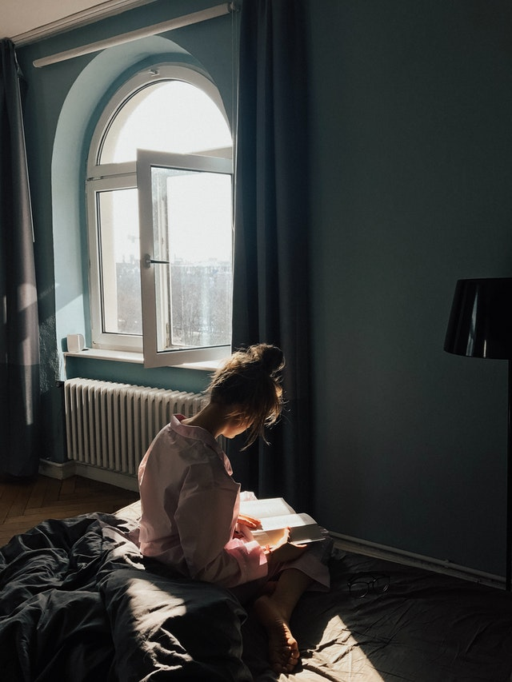
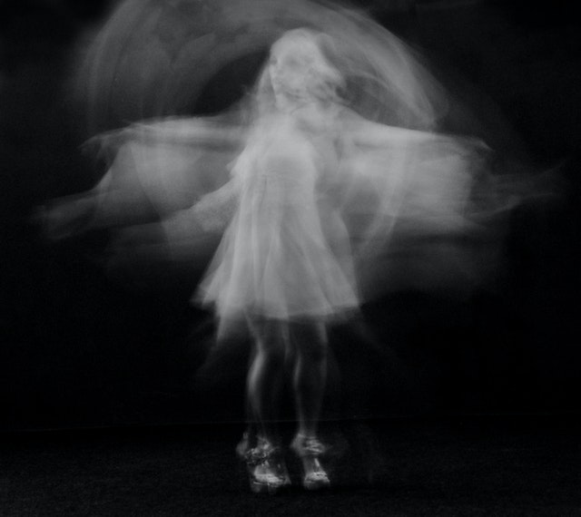

L'oeil de Judas
L'ouverture poétique
Lecture
Synoptique: de la vue à soi, cantique de l'âme
Les hauts murs de ma vie

Dans le regard d'un enfant

L'arbre
.jpg)
Les hauts murs de ma vie
Les hauts murs de ma vie ne sont pas des visages
Que le premier venu peut flatter de la main
Croyez-vous que je puisse habiter une cage
Où l'on vienne en pitié me jeter quelques grains
Quelques déchets d'un ciel dont la plus grosse part
Ne pourrait contenter mon appétit humain
Ceux qui frôlent ma vie ne se demandent guère
La vivante raison que j'aurais d'exister
Si coupé pour toujours du reste de la terre
Il m'arrivait entre ces murs de demeurer
Je saurais vous trouver la place insupportable
Que depuis si longtemps vous occupez en moi
Vivants plus indécis que des châteaux de sable
Que le seul bruit du sang dans la poitrine effraie
Et je vous parlerais comme si de vous-mêmes
Rien ne subsistait plus qu'un feuillage discret
"Les hauts murs de ma vie",
extrait des "Visages de solitudes",
René-Guy Cadou, 1944-1946
Dans le regard d'un enfant
Dans le regard d'un enfant
J'ai vu des continents
Des îles lointaines
De fabuleux océans
Des rives incertaines
Dans le regard d'un enfant.
J'ai vu des châteaux
Des jardins à la française
Des bois de coteaux
De blancs rochers sous la falaise
Dans le regard d'un enfant.
J'ai vu les Champs-Elysées
L'Arc de Triomphe, la Tour Eiffel
Le Louvre et la Seine irisée
Comme un arc-en-ciel.
Dans le regard d'un enfant.
Claude Haller

L'arbre
J’avais un grand arbre vert
Où nichait mon enfance ailée,
Un arbre grand troué de lumière
Qui remplissait le haut de mon âme.
J’avais de douces branches vertes
Où chantait mon enfance triste,
Des branches vertes et sonores
Qui répétaient les chagrins de mon âme.
J’avais mille feuilles vertes
Où palpitait l’élan de mon enfance,
Des feuilles lisses et captives
Comme les oiseaux de mon âme.
J’avais un grand arbre vert
Où se dénouait la fleur de mon enfance,
Pour quel printemps, pour quelle abeille ?
Pour quelle joie, pour quelle souffrance ?
« L’arbre », "Escales", dans Poèmes I, Rina Lasnier, 1950